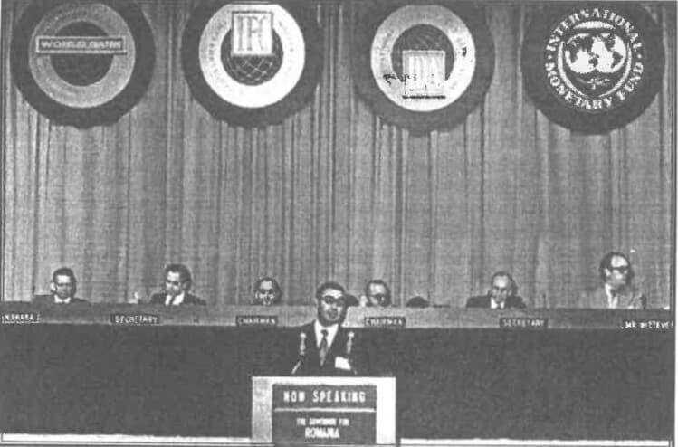
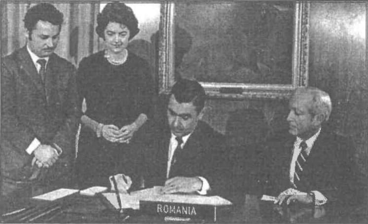
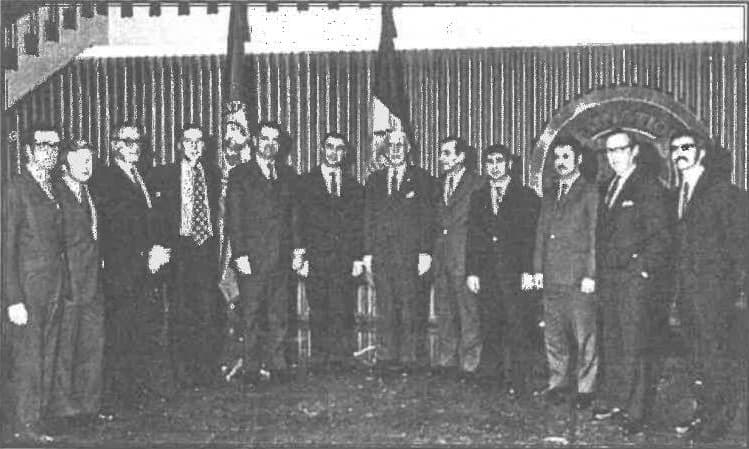

Astăzi, când se discută atât de mult despre planul de austeritate al Guvernului de la București pentru a primi o nouă tranșă din împrumutul contractat cu Fondul Monetar Internațional, socotim că ar fi bine venit să prezentăm detalii despre condițiile aderării României la FMI și primul ei acord cu Fondul, care au fost negociate și semnate, la Washington, la finele anului 1972. În contextul respectiv, marcat profund de Războiul Rece, a fost un eveniment deosebit, care a luat prin surprindere celelalte țări socialiste, și în primul rând URSS, dar și alte state ale lumii, el fiind amplu comentat și de presa internațională, dar nu și de cea din România, care, în afara unei știri seci, n-a putut publicat un rând. Despre debutul negocierilor și momentul semnării acordului - 15 decembrie 1972 - ne-a prezentat date, în exclusivitate, dr. ec. FLOREA DUMITRESCU, ministru al Finanțelor între 1969-1978 și fost guvernator al Băncii Naționale a României (1984-1989). Întrucât este vorba de fapte de istorie, credem că ele trebuie cunoscute și de opinia publică, dat fiind că în acea perioadă s-a știut foarte puțin sau nimic despre ele, iar acum avem privilegiul să le prezentăm așa cum au fost ele trăite chiar de principalul artizan din partea românească al acestui acord istoric.
„În România, preocupările de reformă au început să se manifeste chiar în ultimii ani de viață ai lui Gheorghe Gheorghiu-Dej și s-au intensificat prin venirea în fruntea partidului a lui Nicolae Ceaușescu. Aceste preocupări decurgeau din conținutul Declarației din aprilie 1964, al Constituției și din alte documente programatice de partid și de stat. În Declarația de la București, din aprilie 1964, care respingea încercările URSS de a stabili direcțiile de dezvoltare în țările socialiste aflate sub umbrela sa, se afirmă clar dreptul la independență și principiul neamestecului în treburile interne ale altor state cu evocarea normelor stipulate în documentele ONU.
Independența presupunea o industrie dezvoltată și modernă, ceea ce impunea relații de colaborare cu țările dezvoltate. De altfel, dezvoltarea industriei era un răspuns la încercările sovietice de a rezerva României un viitor agrar. Realizarea obiectivelor privind dezvoltarea industriei necesita eforturi importante, importuri de mașini, utilaje și tehnologie.
Cu toate măsurile luate pentru a se mări ponderea fondului de acumulare în venitul național utilizat, de la 17,1% cât a fost în perioada 1956-1960, la 29,5% în perioada 1966-1970, sursele de finanțare interne erau insuficiente pentru realizarea obiectivelor privind industrializarea și modernizarea economiei. S-a pus problema solicitării unor credite în devize libere de la Banca Internațională de Colaborare Economică din cadrul CAER cu sediul la Moscova. Răspunsul a fost negativ din lipsa lichidităților în valută la această bancă. Autoritățile române au ajuns la concluzia că singura soluție este apelul la piața Financiară mondială.

În cadrul politicii de dezvoltare a colaborării cu țările occidentale, conducerea României a stabilit să se ducă negocieri pentru aderarea țării la Fondul Monetar Internațional și la Banca Mondială. La finele anului 1969, președintele Băncii Mondiale, Robert McNamara, a făcut o vizită în România, la invitația Ministerului Afacerilor Externe. Cu acest prilej, în discuția pe care a avut-o cu Nicolae Ceaușescu s-a stabilit să se înceapă negocierile pentru aderare. Pe această bază am convenit cu McNamara ca o delegație a Fondului Monetar Internațional să vină în România la începutul anului 1970 pentru a demara negocierile tehnice.
Negocierile s-au purtat la București între delegația Fondului condusă de Wittome - director pentru Europa - și delegația română, care era formată din reprezentanți ai Ministerului Finanțelor (Florea Dumitrescu - ministru, conducătorul delegației, Iulian Bituleanu - adjunct al ministrului, Costin Kirițescu - monetarist, Gh. Crăiniceanu - directorul Direcției valutare, Dumitru Lăzărescu - specialist în relațiile valutare), ai Ministerului Afacerilor Externe (Nicolae Ecobescu - adjunct al ministrului, Mada Ioan) și alți specialiști. Pe parcursul negocierilor, delegația noastră se consulta cu reprezentanți din conducerea Băncii Naționale, Vasile Malinschi — guvernator - și ai Comitetului de Stat al Planificării, Gh. Stroe — vicepreședinte. Periodic, îi informam direct pe Nicolae Ceaușescu și pe Ion Gheorghe Maurer - prim-ministru.
În timpul negocierilor, cea mai importantă problemă au constituit-o stabilirea cotei de capital de participare, mărimea ei și forma de depunere. Reglementările Fondului prevedeau că fiecare țară care dorește să devină membru trebuie să depună 90% din cotă la FMI, în aur. Eforturile pe care le face un membru la depunerea cotei se recompensează ulterior prin creditele folosite de la FMI care au un nivel de dobândă avantajos, mult mai mic decât pe piața bancară internațională.
Discuțiile au fost mai complexe și datorită faptului că între țările dezvoltate - SUA, Franța, Germania federală - se intensificaseră confruntările cu privire la rolul monetar al aurului, la necesitatea desființării aurului ca „barometru” al stabilității dolarului etc. De asemenea, noi am dorit să ne clarificăm cât mai mult asupra condiționărilor impuse de FMI și BIRD la acordarea creditelor, asupra aspectelor legate de trecerea în perspectivă la convertibilitatea leului și altele.
Negocierile tehnice au durat aproape doi ani, iar acordul de aderare l-am semnat, în numele Guvernului Român, la sediul FMI din Washington în decembrie 1972. După terminarea lor, când totul era convenit cu reprezentanții Fondului, propunerile finale de aderare au fost discutate și aprobate de Biroul Politic al partidului. Tonul discuțiilor l-a dat Ion Gheorghe Maurer, care a subliniat importanța acestui pas istoric, exprimând susținerea propunerilor. Toți ceilalți membri au susținut și aprobat propunerile de aderare. Despre negocieri, despre prezența delegației FMI la București, despre aprobarea propunerilor nu s-a făcut nici un fel de comentariu în mass-media.
În timp ce negociam cu reprezentanții Fondului, participam periodic și la lucrările Comisiei Financiar-Valutare a CAER, conform programelor convenite. De câte ori mergeam la ședințele acestei Comisii îl întrebam pe Nicolae Ceaușescu în ce moment vom informa țările socialiste membre CAER asupra acțiunii României de a deveni membru al FMI și Băncii Mondiale. De fiecare dată, Nicolae Ceaușescu îmi spunea că nu este încă momentul. Căuta o perioadă mai relaxată în relațiile internaționale, evita să tensioneze aceste relații cu știri inflamabile.
Eram în semestrul II al anului 1972. Sosise vremea în care urma să informăm partenerii noștri din CAER despre acțiunile României. La ședința Comisiei Financiar-Valutare a CAER, care avea loc la Moscova, erau prevăzute pe ordinea de zi probleme specifice, dar și o Informare privind EMI și BIRD. La discuțiile ce au avut loc toți miniștrii Finanțelor din celelalte țări au criticat sever politicile acestor instituții capitaliste. În final, am luat cuvântul și eu, arătând ce demersuri am întreprins pe linia aderării României la aceste organisme. S-a declanșat o adevărată discuție furtunoasă: că România se aruncă în brațele capitalismului, că va fi subminată suveranitatea țării, că România sparge unitatea țărilor socialiste etc. Le-am spus, în final, că hotărârea autorităților române este luată, că știm ce facem, că știm să ne apărăm suveranitatea și să promovăm interesele țării. Am subliniat că această acțiune se încadrează în politica externă a României, de a dezvolta relațiile cu toate țările lumii, indiferent de orânduirea socială, și cu organismele financiare internaționale care pot contribui la dezvoltarea cooperării economice între țări.
După ședință, miniștrii Finanțelor din Ungaria și Polonia au venit la mine și m-au rugat prietenește să le împărtășesc și lor din experiența pregătirilor pentru aderare, subliniindu-mi că țările lor nu-și permit să facă ceea ce face România. Am stat cu fiecare ore întregi și le-am spus cu amănunte cum am procedat și cum ne gândim să acționăm în relațiile cu FMI și BIRD. Menționez că, înainte de a primi împuternicirea Guvernului Român de a semna Acordul de aderare la FMI și BIRD, am prezentat propunerile de aderare Comisiilor Marii Adunări Naționale. După ce am făcut prezentarea în fața a sute de deputați care constituiau Comisiile, am fost interpelar de un deputat, pe nume Constantin Pârvulescu (fost secretar general al PCR, un cominternist cunoscut, care, totuși, la un moment dat, a denunțat cultul personalității lui Ceaușescu într-un Congres al PCR - n.r.), dacă am examinat bine unde intrăm și dacă acest act nu va afecta suveranitatea țării? Am precizat în fața Comisiilor reunite că am studiat cu răspundere politicile acestor instituții și m-am angajat că tot ce voi întreprinde în relațiile cu FMI și BIRD va sluji promovării interesului național. Comisiile au votat propunerile, iar eu am acționat împreună cu reprezentanții MAE pentru pregătirea semnării documentelor de aderare: ne-am consultat cu Ambasada României din SUA, cu reprezentanții FMI și BIRD, am stabilit data semnării (15 decembrie 1972), m-am pregătit pentru primele discuții privind colaborarea cu cele două instituții.
La sediul FMI din Washington, în prezența reprezentantului Ambasadei României, Mircea Răceanu, am semnat Acordul de aderare a României la FMI. După acest moment, ambasadorul român în SUA, Corneliu Bogdan, a organizat o recepție pentru a marca istoricul eveniment.
În fața drapelului României și al FMI, reprezentanții celor două părți au marcat începutul colaborării: din partea română: Florea Dumitrescu - ministrul Finanțelor, Corneliu Bogdan - ambasadorul României în SUA, Vasile Voloșeniuc - președintele BRCE, Mircea Răceanu - consilierul ambasadei; din partea Fondului: Lieftinck - director executiv la FMI, care a reprezentat mulți ani grupul de țări membre (Olanda, Iugoslavia, Israel, România) din care a făcut parte și România, Wittome - director FMI pentru Europa, care a participat la negocierile de aderare de la început până la sfârșit și alți reprezentanți ai FMI.

Înainte de semnarea Acordului de Aderare, MAE a desfășurat, prin ambasadele României, o amplă activitate de informare a țărilor membre la EMI și BIRD cu privire la demersurile ce se fac pentru ca și România să devină membru la aceste instituții. După semnarea documentelor de aderare potrivit reglementărilor FMI și BIRD, fiecare țară urma să voteze primirea noului membru.
Astfel, s-a intensificat munca diplomatică din partea României solicitând sprijinul țărilor dezvoltate, cu o pondere de vot importantă, în cadrul FMI să finalizeze procesul de votare pentru România. Procesul de votare din partea celorlalte țări membre a prezentat o anumită particularitate, dat fiind că România era prima țară socialistă din cadrul CAER care solicitase să devină membru (cu excepția Iugoslaviei, care avea această calitate de la înființarea celor două instituții internaționale financiare). Un sprijin substanțial l-a primit România atunci din partea autorităților din SUA, Anglia, Franța, Germania Federală, Italia, Olanda și a altor țări membre.
Demersul României s-a bucurat atunci de aprecieri elogioase și încurajatoare. În întâlnirile pe care le aveam în acei ani cu miniștrii Finanțelor, respectiv cu guvernatorii băncilor centrale din țările dezvoltate și în curs de dezvoltare, în calitatea lor de guvernatori sau viceguvernatori ai țărilor respective la FMI și BIRD, am fost profund impresionat de atitudinea lor plină de amabilitate și de deschidere pentru o colaborare fructuoasă în avantajul țărilor noastre, ceea ce ne-a stimulat în demersurile întreprinse în perioada următoare.
După ce România a devenit membru oficial la FMI, în cadrul unei întâlniri cu McNamara, președintele Băncii Mondiale, acesta mi-a spus: „Acum când România este membru al FMI și al Băncii, ne-am gândit să-i acordăm pentru început credite într-un volum de un miliard de dolari”. În sinea mea mi-am zis că Banca Mondială dorește să impresioneze autoritățile române și celelalte țări socialiste despre avantajele de care se bucură România ca membru la aceste organisme internaționale.
În discuții am mulțumit conducerii băncii pentru ce s-a gândit să facă pentru România și l-am întrebat pe McNamara pentru ce putem folosi aceste credite, în ce domeniu, pentru ce obiective. Mi-a precizat: „În domeniul infrastructurii”. L-am întrebat în continuare dacă acești bani trebuie să-i restituim Băncii. El mi-a răspuns că „da, este normal sunt credite rambursabile, cu un anumit termen de grație”.
I-am precizat că, dacă vom folosi creditele pentru autostrăzi, drumuri, poduri, nu vom putea restitui la scadență, după 10-15 ani, creditele, pentru că asemenea obiective nu aduc venituri decât în timp mai mare, 20-30 de ani. I-am mai spus că România nu este suficient de dezvoltată pentru a lua bani din alte sectoare pentru a rambursa creditele pentru infrastructură. Ca urmare, nu vom putea face apel la creditele oferite decât dacă le putem folosi pentru creșterea producției, pentru crearea de noi locuri de muncă, pentru sporirea veniturilor. Avem în programele noastre de dezvoltare economico-sociale obiective noi de realizat în diferite domenii ale industriei, agriculturii etc., avem obiective de modernizat.
McNamara mi-a precizat că reglementările Băncii nu prevăd astfel de credite. I-am menționat că, dacă am putea primi credite pentru dezvoltarea producției materiale: bunuri de consum, utilaje, mașini, atunci vom avea posibilitatea să ne angajăm la un volum și mai mare de credite decât un miliard de dolari. Mi-a părut rău că l-am dezamăgit, chiar pe primul om care ne-a întins o mână, ne-a sfătuit cum să dezvoltăm colaborarea cu marea finanță a lumii, cum putem să contribuim la progresul economiei și al țării. Nu am dezarmat însă.
M-am despărțire de McNamara cu speranța că vom găsi căile de colaborare. A fost un moment de insatisfacție, dar care a pregătit o mare victorie, a unei colaborări benefice pentru România. Am reușit să îmbunătățim regulile Băncii Mondiale aplicate timp de circa 30 de ani, în beneficiul României și al zecilor de țări membre care au beneficiat ulterior de credite de producție de la această instituție.
Întors în țară, l-am informat pe Nicolae Ceaușescu despre poziția prezentată conducerii Băncii, care mi-a spus că am procedat bine. După câteva săptămâni, McNamara informa autoritățile române că Banca a examinat propunerile noastre și a modificat reglementările. Astfel, România poate accesa credite și pentru producție. I-am mulțumit atunci, dar o fac și azi. „FELICITĂRI domnule MCNAMARA. Ați dovedit că ați fost nu numai un mare strateg militar al SUA, dar și un vizionar de frunte în domeniul economic, financiar și bancar!”
Am pregătit obiectivele de finanțat împreună cu ministerele de resort, cu băncile (Banca de Investiții și Banca Agricolă) și am început negocierile pe obiective concrete. În întreaga mea activitate ca ministru al Finanțelor am fost călăuzit de angajamentul luat în perioada de pregătire a aderării, că voi veghea și voi milita în permanență pentru promovarea interesului național. Fiecare obiectiv pe care îl prezentam pentru a fi finanțat cu credite de la Banca Mondială era analizat împreună cu președinții celor două bănci: Mihai Diamandopol, de la Banca de Investiții, și Ion Rușinaru, de la Banca Agricolă (specialiști de înaltă clasă și colaboratori de nădejde), prin prisma eficienței, a creșterii producției, a productivității muncii și a contribuției la creșterea exportului și a veniturilor care să permită restituirea creditelor și a dobânzilor aferente.
În perioada 1973-1989, România a beneficiat de credite de la FMI și Banca Mondială de circa șase miliarde de dolari, credite care au contribuit la creșterea economică, la industrializarea României, la modernizarea agriculturii și a altor domenii.
Experiența arată că orientarea creditelor primite de la Banca Mondială, în special pentru dezvoltarea și tehnologizarea producției, a permis României creșterea exporturilor și a încasărilor valutare, asigurarea surselor pentru rambursarea creditelor primite și creșterea veniturilor populației.
Analiza relațiilor altor țări cu FMI și Banca Mondială mai scoate în evidență că finanțarea din credite cu prioritate a infrastructurii a dus multe țări la creșterea datoriei externe, la sărăcie și mizerie. Sunt edificatoare în acest sens relatările și concluziile cuprinse în cartea: „Confesiunile unui asasin economic”.
Autorul volumului, John Perkins, arată că, după ce a ajutat țările în care a lucrat cu credite de la Banca Mondială să realizeze aeroporturi, autostrăzi, să construiască centrale care să producă electricitate etc., deci a contribuit la modernizarea țărilor respective, a ajuns la constatarea că sărăcia și mizeria sunt mai mari după îndatorarea țărilor decât la început și se consideră vinovat, se consideră asasin economic. John Perkins a avut curajul să descrie asasinii economici astfel: „Mercenarii sau asasinii economici (AE) sunt profesioniști extrem de bine plătiți care escrochează țări din întreaga lume pentru sume ajungând la trilioane de dolari. Ei direcționează bani de la Banca Mondială, de la Agenția SUA și pentru Dezvoltare Internațională (USAID), precum și de la alte organizații de «ajutorare» străine către seifurile corporațiilor gigant și buzunarele acelor câtorva familii de bogătași, care controlează resursele naturale ale planetei. Mijloacele de care uzează în acest scop, variază de la rapoarte financiare frauduloase, alegeri trucate, mită, șantaj, sex, ajungând până la crimă”.
Am făcut această prezentare pentru a atrage atenția autorităților române că au o mare răspundere în angajarea și în utilizarea creditelor de la Banca Mondială, mai ales acum, când s-a pus problema angajării unui credit de multe miliarde euro, pentru a nu lăsa generațiilor viitoare un cadou amar - care le poate otrăvi viața.
Revenind la relațiile de început dintre România și Banca Mondială, în primii 10 ani de la aderare, Româniaa a încheiat 33 de acorduri de împrumut pentru proiecte din industrie, agricultură, transporturi și altele. Folosirea creditelor de la Banca Mondială pentru asemenea proiecte, concomitent cu creșterea producției interne, a contribuit la mărirea volumului de investiții în economia națională de la patru miliarde dolari, cât era acest volum în anul 1970, la circa 10 miliarde de dolari în fiecare din anii următori. Din cele 33 de proiecte creditate, 17 erau finanțate prin Banca de Investiții, iar alte 16 erau finanțate prin Banca pentru Agricultură și Industria Alimentară. Din totalul proiectelor 15 obiective s-au realizat integral cu echipamente și materiale din țară, ceea ce a impulsionat dezvoltarea unor sectoare ale industriei, dar a avut și un impact negativ, ducând la unele întârzieri în punerea în funcțiune a obiectivelor respective.

Pentru fiecare proiect de investiție finanțat cu credite de la Banca Mondială, Banca de Investiții și respectiv Banca Agricolă țineau o evidență strictă privind folosirea creditului - Fișa creditului și problemele intervenite în execuție. Periodic, Banca și ministerul de resort analizau problemele și stabileau măsurile care trebuiau luate. Deseori, asemenea analize se făceau în cadrul Guvernului, care se încheiau cu soluțiile de aplicat pentru finalizarea obiectivului și atingerea parametrilor proiectați (producție, productivitate, venituri la 1.000 lei fonduri fixe, export etc.).
În anul 1977, de exemplu, au fost înființate și reorganizate peste 100 de întreprinderi și centrale economice: industriale, de construcții etc. Întreprinderea de produse electronice și electrice „Electroargeș” cu sediul în Curtea de Argeș, Întreprinderea de țevi Zalău, Combinatul industrial pentru construcții de mașini în orașul Bistrița, Combinatul de fibre sintetice Câmpulung, Întreprinderea de mașini unelte, accesorii și scule în municipiul Baia Mare, Întreprinderea de rulmenți grei Ploiești, Întreprinderea de țevi sudate Zimnicea, Întreprinderea de anvelope Zalău etc. Unele din aceste întreprinderi au fost finanțate și cu credite de la Banca de Reconstrucție și Dezvoltare (BIRD).
În perioada 1972-1989, România, în calitate de membru al FMI și BIRD, a reușit să construiască cu credite de la Banca Mondială obiective de mare importanță pentru economia românească: Combinatul de oțeluri speciale Târgoviște, Întreprinderea de țevi Roman, Combinatul de fibre sintetice Câmpulung Muscel, Întreprinderea de anvelope Zalău, Combinatul de îngrășăminte chimice Bacău, dezvoltarea Combinatului chimic Craiova, Uzina hidroelectrică Râul Mare Retezat, CTE Turceni etapa a II-a și multe alte zeci de unități economice care au creat zeci de mii de locuri de muncă, au mărit avuția națională a țării.
În realizarea unor astfel de obiective, efortul propriu al țării a fost determinant. Rata acumulării din venitul național a fost forțată o bună perioadă de timp. În intervalul 1970-1989, ponderea fondului de acumulare în venitul național utilizat a fost între 29,5-36,0%. În structura fondului de acumulare suma investițiilor nete a marcat o dinamică puternică. Această rată forțată a avut și un efect negativ. Mărindu-se frontul de investiții peste puterile economice ale țării, multe obiective nu au fost terminate la termen, ducând la imobilizarea unor fonduri importante, la scăderea eficienței economice. În acest context este de menționat că specialiștii FMI și BIRD, în discuțiile cu reprezentanții României, abordau asemenea aspecte, dar nu condiționau acordarea împrumuturilor de o manieră insuportabilă. Contau în mare măsură pe răspunderea autorităților române.
După 1989, conținutul negocierilor și al acordurilor de împrumut a fost diametral opus. Aceste acorduri au avut un caracter blocant, distructiv, demolator. În analizele și scrierile mele am caracterizat acordurile încheiate după 1989 antieconomice, antinaționale și anticonstituționale.
Asemenea acorduri prevăd: se închid atâtea întreprinderi, se lichidează atâtea combinate industriale, agricole etc. Reiau aici o formulare din Acord: „Inițierea privatizării a 50 de întreprinderi acceptabile pentru Banca Mondială” (deci nu contează părerea României??) prin așa-numita metodă «în pachet» aceste întreprinderi reprezintă 10,7% din capitalul social al FPS”. Deci întreprinderile se vând în pachet, deși au fost făcute una câte una, chiar cu bani de la Banca Mondială. Desigur, vina este a autorităților române care s-au abătut grav de la angajamentul luat la Aderarea României la FMI și BIRD, potrivit căruia colaborarea cu FMI și BIRD va acționa în direcția promovării interesului național, și de la prevederile Constituției României. Asemenea acorduri au dus la dezindustrializarea României, la jefuirea avuției naționale și la îndatorarea gravă a țării, de aceea propun Parlamentului României și președintelui țării să ceară politicienilor și guvernanților care au participat la ruinarea economiei și la falimentarea ei să-și asume răspunderea și să stabilească sancțiuni pe măsura faptelor.
COSOR: Noi care am trăit etapa industrializării României știm ce eforturi uriașe au fost făcute pentru ca România să intre în rândul țărilor dezvoltate. Ca unul care am participat la negocieri cu FMI știu cum s-a derulat colaborarea cu acest organism și cu Banca Mondială. Erau interesați dar și satisfăcuți că banii obținuți se utilizau pentru dezvoltarea economiei și o spuneau deschis. Atunci când încercau să impună măsuri care dezavantajau economia, cum a fost cazul creșterii dobânzilor la credite li s-a explicat consecințele în economie și au cedat. Desigur, unele solicitări se acceptau cum a fost cazul cu creșterea prețului petrolului la gura sondei de la cca 450 lei tona la 1600 lei tona. Generația de atunci era mândră că România se va ridica pe treapta pe care o merită și a făcut eforturi supra omenești pentru industrializarea țării și asigurarea unui nivel de trai decent al populației. Această dezvoltare economică deranja însă țările care cuceriseră piețele mondiale și doreau să domine piața. O primă încercare de a distruge economia României au făcut-o în anul 1980 când au regizat intrarea în încetare de plăți a României. Pentru cei care ne-am ocupat de aceste probleme ne-a surprins că datoria externă a României de 12,5 miliarde dolari era de trei ori mai mică decât a Ungariei și de șase ori decât a Poloniei. Până în 1989 n-au reușit să distrugă industria și agricultura României. În țară se producea și din valorificarea produselor industriale și agricole la export s-a reușit achitarea datoriei. Desigur cu eforturi supra omenești. Momentul le-a devenit favorabil după 1989 când au găsit trădători și hoți puși în fruntea țării, care pentru comisioanele încasate și îmbogățirea lor și a mafiei din care au făcut parte, au organizat distrugerea industriei și a agriculturii și vânzarea obiectivelor strategice către cercurile de afaceri străine interesate. România a rămas în sapă de lemn. Consecințele le vedem acum și viitorul este și mai sumbru. Este curios că nu s-a găsit o minte luminată care să curme acest jaf. Este un blestem al acestui popor român să fie ocupat de străini și umilit.